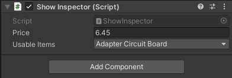
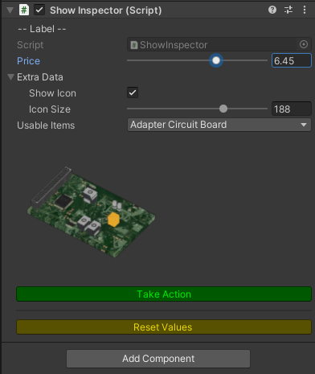

And turn it in to
using System;
using UnityEngine;
public class ShowInspector : MonoBehaviour
{
[Range(1, 10)]
public float Price = 5;
public ExtraData ExtraData = new ExtraData();
public UsableItems UsableItems = UsableItems.None;
public void ResetValues()
{
UsableItems = UsableItems.None;
Price = 5;
}
}
[Serializable]
public class ExtraData
{
public bool ShowIcon = true;
[Range(32.0f, 256)]
public float IconSize = 96;
}
using System.Collections;
using System.Collections.Generic;
using UnityEditor;
using UnityEngine;
[CustomEditor(typeof(ShowInspector)), CanEditMultipleObjects]
public class ShowInspector_UI : Editor
{
private ShowInspector _showInspector;
private string _oldName;
private Texture2D _showItem = null;
private static Texture2D GetTexture(string name)
{
try
{
Texture2D go = (Texture2D)Resources.Load(name);
return go;
}
catch
{
return null;
}
}
public override void OnInspectorGUI()
{
DrawDefaultInspector();
if (_showInspector.ExtraData.ShowIcon)
{
if (_showItem == null ||
_oldName != _showInspector.UsableItems.ToString())
{
_showItem = GetTexture(_showInspector.UsableItems.ToString());
_oldName = _showInspector.UsableItems.ToString();
}
if (_showItem != null)
{
GUILayout.Label(
_showItem,
GUILayout.Width(_showInspector.ExtraData.IconSize),
GUILayout.Height(_showInspector.ExtraData.IconSize));
}
}
if (_showInspector.UsableItems != UsableItems.None)
{
GUI.color = Color.green;
if (GUILayout.Button("Reset Values"))
{
_showInspector.ResetValues();
}
}
}
private void OnEnable()
{
_showInspector = (ShowInspector)target;
}
}